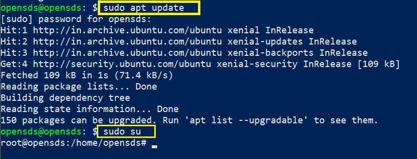
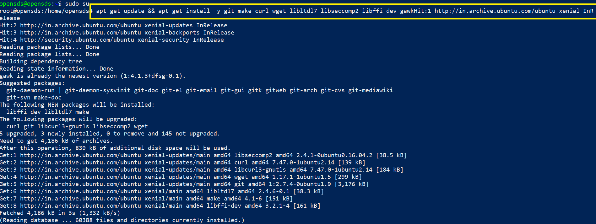
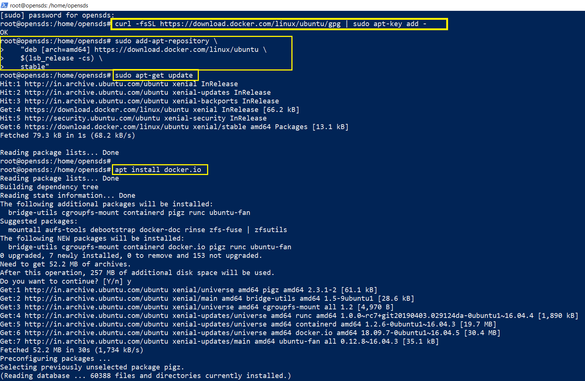
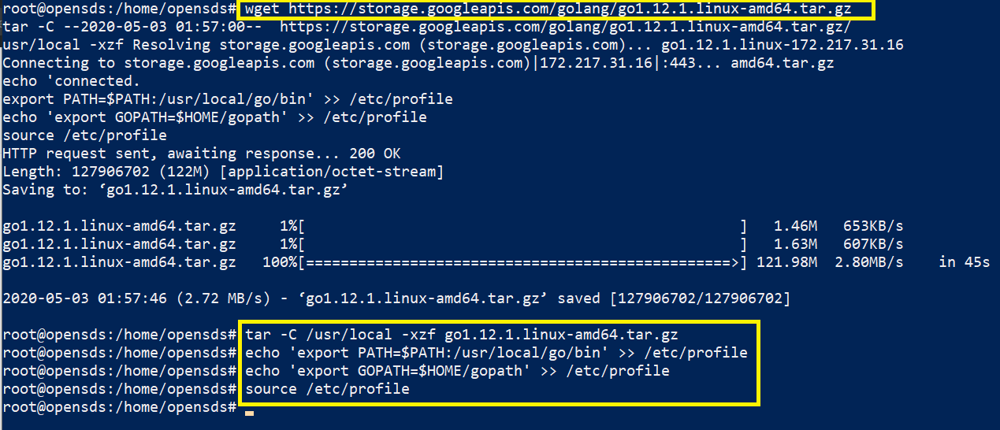
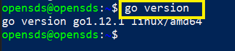

OpenSDS Install through Ansible¶
1. How to install an OpenSDS local cluster¶
This document describes how to install an SODA local cluster, including Hotpot, Gelato, Telemetry, Orchestration, and Dashboard components.
Pre-config (Ubuntu 16.04)¶
All the installation work is tested on Ubuntu 16.04, please make
sure you have installed the right one. Also root user is REQUIRED
before the installation work starts.
Update the System and change user to root
sudo apt update sudo su
packages
Install following packages:
apt-get update && apt-get install -y git make curl wget libltdl7 libseccomp2 libffi-dev gawk
docker
Install docker and docker compose:
#Add Docker’s official GPG key: curl -fsSL https://download.docker.com/linux/ubuntu/gpg | sudo apt-key add - #Update repository sudo apt update # Install Docker and Docker compose sudo apt install docker-ce docker-compose
golang
You can install golang by executing commands below:
wget https://storage.googleapis.com/golang/go1.12.1.linux-amd64.tar.gz tar -C /usr/local -xzf go1.12.1.linux-amd64.tar.gz echo 'export PATH=$PATH:/usr/local/go/bin' >> /etc/profile echo 'export GOPATH=$HOME/gopath' >> /etc/profile source /etc/profile
Check golang version information (v1.12.x):
root@proxy:~# go version go version go1.12.1 linux/amd64
Download opensds-installer code¶
git clone https://github.com/opensds/opensds-installer.git
cd opensds-installer/ansible
# Checkout the latest stable release. Current stable release: stable/capri. If you want to get the master branch of all components, you can skip this step. (Attn: Master may not be stable or tested fully)
git checkout stable/capri
Install ansible tool¶
To install ansible, run the commands below:
# This step is needed to upgrade ansible to version 2.4.2 which is required for the "include_tasks" ansible command.
chmod +x ./install_ansible.sh && ./install_ansible.sh
ansible --version # Ansible version 2.4.x is required.
Configure opensds install variables¶
System environment¶
Firstly you need to modify host_ip in group_vars/common.yml, and
you can specify which project (hotpot or gelato) to be deployed:
# This field indicates local machine host ip
host_ip: 127.0.0.1
# This field indicates which project should be deploy
# 'hotpot', 'gelato' or 'all'
deploy_project: all
Set HOST_IP environment variable¶
The HOST_IP environment variable has to be set to your local machine
IP address
export HOST_IP={your_real_host_ip}
echo $HOST_IP
Check if the hosts can be reached¶
ansible all -m ping -i local.hosts
Run opensds-ansible playbook to start deploy¶
ansible-playbook site.yml -i local.hosts
# You can use the -vvv option to enable verbose display and debug mode.
ansible-playbook site.yml -i local.hosts -vvv
2. How to test opensds cluster¶
OpenSDS CLI¶
Firstly configure opensds CLI tool:
sudo cp /opt/opensds-hotpot-linux-amd64/bin/osdsctl /usr/local/bin/
export OPENSDS_ENDPOINT=http://{your_real_host_ip}:50040
export OPENSDS_AUTH_STRATEGY=keystone
export OS_AUTH_URL=http://{your_real_host_ip}/identity
export OS_USERNAME=admin
export OS_PASSWORD=opensds@123
export OS_TENANT_NAME=admin
export OS_PROJECT_NAME=admin
export OS_USER_DOMAIN_ID=default
osdsctl pool list # Check if the pool resource is available
OpenSDS UI¶
OpenSDS UI dashboard is available at http://{your_host_ip}:8088,
please login the dashboard using the default admin credentials:
admin/opensds@123. Create tenant, user, and profiles as
admin. Multi-Cloud service is also supported by dashboard.
Logout of the dashboard as admin and login the dashboard again as a non-admin user to manage storage resource: